Create Now World Tour
Adobe Creative Cloud
Creative Cloud: Platform for delivering innovation
Launched May 2012
- All CS6 Applications
- Acrobat X
- Muse
- Edge Preview
- Business Catalyst
- Typekit
June to October
- Lightroom 4
- New Muse features
- New Illustrator features
- Digital Publishing Suite,
Single Edition - New Dreamweaver features
- Edge Tools & Services
- Acrobat XI
December
- New Photoshop features
- New Muse features (Mobile)
- Gaming Developer Tools
- Creative Cloud for teams
- Desktop sync preview
- Creative Cloud Learning
Jan to April
- Edge Reflow Preview
- New Edge Animate features
- New Dreamweaver features
- New Muse features
- Behance Integration
May — June
- 15 new CC desktop apps with hundreds of new features
- Sync your fonts, colors and settings
- Publish directly to Behance from within the desktop apps
- Folder sharing and file versioning
- All tightly integrated through Creative Cloud


Apps


Colors, Fonts
Colors, Fonts
Colors, Fonts
Colors, Fonts

Colors, Fonts
Portfolio
Colors, Fonts
Portfolio
Work
Reveal.js
HTML Presentations Made Easy
Created by Hakim El Hattab / @hakimel
Heads Up
reveal.js is a framework for easily creating beautiful presentations using HTML. You'll need a browser with support for CSS 3D transforms to see it in its full glory.
Vertical Slides
Slides can be nested inside of other slides, try pressing down.
Basement Level 1
Press down or up to navigate.
Basement Level 2
Cornify

Basement Level 3
That's it, time to go back up.
Slides
Not a coder? No problem. There's a fully-featured visual editor for authoring these, try it out at http://slid.es.
Point of View
Press ESC to enter the slide overview.
Hold down alt and click on any element to zoom in on it using zoom.js. Alt + click anywhere to zoom back out.
Works in Mobile Safari
Try it out! You can swipe through the slides and pinch your way to the overview.
Marvelous Unordered List
- No order here
- Or here
- Or here
- Or here
Fantastic Ordered List
- One is smaller than...
- Two is smaller than...
- Three!
Transition Styles
You can select from different transitions, like:
Cube -
Page -
Concave -
Zoom -
Linear -
Fade -
None -
Default
Themes
Reveal.js comes with a few themes built in:
Sky -
Beige -
Simple -
Serif -
Night -
Default
* Theme demos are loaded after the presentation which leads to flicker. In production you should load your theme in the <head> using a <link>.
Global State
Set data-state="something" on a slide and "something"
will be added as a class to the document element when the slide is open. This lets you
apply broader style changes, like switching the background.
"blackout"
"soothe"
Custom Events
Additionally custom events can be triggered on a per slide basis by binding to the data-state name.
Reveal.addEventListener( 'customevent', function() {
console.log( '"customevent" has fired' );
} );
Clever Quotes
These guys come in two forms, inline:
“The nice thing about standards is that there are so many to choose from”
and block:
“For years there has been a theory that millions of monkeys typing at random on millions of typewriters would reproduce the entire works of Shakespeare. The Internet has proven this theory to be untrue.”
Pretty Code
function linkify( selector ) {
if( supports3DTransforms ) {
var nodes = document.querySelectorAll( selector );
for( var i = 0, len = nodes.length; i < len; i++ ) {
var node = nodes[i];
if( !node.className ) ) {
node.className += ' roll';
}
};
}
}
Courtesy of highlight.js.
Intergalactic Interconnections
You can link between slides internally, like this.
Fragmented Views
Hit the next arrow...
... to step through ...
any type- of view
- fragments
Fragment Styles
There's a few styles of fragments, like:
grow
shrink
roll-in
fade-out
highlight-red
highlight-green
highlight-blue
Spectacular image!

Export to PDF
Presentations can be exported to PDF, below is an example that's been uploaded to SlideShare.
Take a Moment
Press b or period on your keyboard to enter the 'paused' mode. This mode is helpful when you want to take distracting slides off the screen during a presentation.
Stellar Links
THE END
BY Hakim El Hattab / hakim.se
#CreateNow